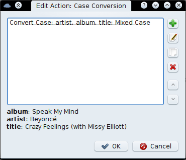

Tutorial 2¶
Consider the puddletag toolbar without the pattern combo:

Let’s pick buttons at random and start with the right the Reload ( ) button (found in File menu). All it does is reload the currently opened directory. If you’ve added files ad hoc to puddletag, it re-reads those files again (useful if you’ve moved or deleted files outside of puddletag).
) button (found in File menu). All it does is reload the currently opened directory. If you’ve added files ad hoc to puddletag, it re-reads those files again (useful if you’ve moved or deleted files outside of puddletag).
Next up is the Functions button ( ) from the Actions menu. Select some files and click on it. You’ll get this window:
) from the Actions menu. Select some files and click on it. You’ll get this window:
What you see right there is the Case Conversion puddletag Function. More are available via the combo box, but this one in particular is where our attention will be focused for the coming paragraphs.
The Case Conversion function can do three types of erm…case conversion: UPPER, lower and Mixed Case. Mixed Case being special in that capitalises the first letter of each word and lowers the rest. Words boundaries are defined by the characters listed, so don’t be hollering at me when every letter after r is capitalized after some change you made.
Note that __selected is listed in fields. This means that the function will be applied to all the selected cells. You can specify your own list by entering a bunch of comma-separated fields eg. artist, title, album or all fields by using __all. For more info check out the Things You Should Know page.
Clicking “OK” will apply the Function each selected file using appropriate fields (ie. those selected).
Three spaces to the left of the Pattern Combo is the Actions button ( ) also from the Actions menu. It opens up the Actions window:
) also from the Actions menu. It opens up the Actions window:

Actions are just a bunch of functions run one after the other. In normal parlance they’d be called macros, but I like Mp3tag’s nomenclature.
What they do is run previously defined functions on the selected files. Lemme show you how they work…
Select Case Conversion and click on Edit. You should get:
What you see there are normal, old puddletag functions, but with a slight difference. The functions are applied only to the fields you specify. For example, the first is the Case Conversion function that changes the album, title and artist fields to “Mixed Case”. Here’s what it does (click the edit button - the second button from top):

I told you it was a normal puddletag function, with the specified fields being the only difference. Fields are separated with a comma ‘,’ and any spaces before and after the field name is removed.
The Quick Actions ( ) button is something I always wanted Mp3tag to have, but it doesn’t and puddletag does…therefore puddletag is better!…well, maybe not… Anyway, a Quick Action runs an action as normal but ignores the fields defined in the functions and uses the selected cells.
) button is something I always wanted Mp3tag to have, but it doesn’t and puddletag does…therefore puddletag is better!…well, maybe not… Anyway, a Quick Action runs an action as normal but ignores the fields defined in the functions and uses the selected cells.
So if you have an action that writes to the artist field, but now want to use that action to write to the title field. Just select the title field and do a Quick Action.
The Autonumbering Wizard ( ) from the Tools menu, lets you number selected tracks sequentially. First, though, it shows you the dialog below so you specify exactly how you want the tracks numbered.
) from the Tools menu, lets you number selected tracks sequentially. First, though, it shows you the dialog below so you specify exactly how you want the tracks numbered.

The Add Folder button ( ) from the File menu appends a folder to the file-view without unloading any currently loaded files.
) from the File menu appends a folder to the file-view without unloading any currently loaded files.
The Rename Dir button () from the Convert menu renames the currently selected folder using the pattern in the Pattern Combo. For instance if the Pattern Combo contained, %artist% - %album%, it would behave the same way as file renaming (except on the directory).
The last item on our agenda for this tutorial is Import File (), also from the Tools menu. Use it to import a text file to read tags from.

You have the option of opening a different file and obtaining the tags from each line in the file in exactly the same way as extracting tags from filenames. Editing the text on the left will change the tags, but editing the tags themselves will not.

Clicking OK will write the tags to the selected files.